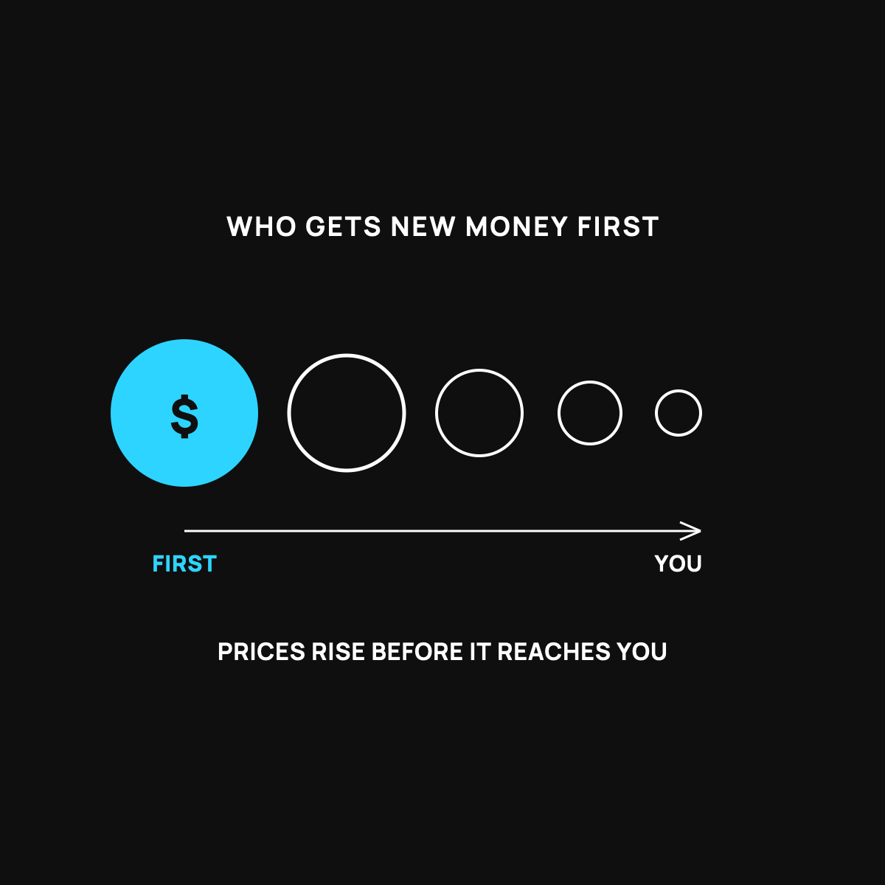

Who Gets the New Money First (and Why It's Not You)
The front of the buffet eats before the prices go up. You're near the back.
When new money gets made, it doesn't land on everyone at once. Big banks, the government, and people with assets and cheap borrowing get it first and spend it while prices are still low. By the time it reaches your paycheck, prices have already climbed. You can't jump the line, but you can stop holding all your savings in cash.

When new money gets made, it doesn't land on everyone at the same time. It shows up somewhere first, and it spreads out slowly from there. Where you stand in that line matters more than almost anyone tells you. Here's the plain version of why the folks at the front come out ahead, and why it's usually not you.
The buffet that raises prices while you wait
Picture a buffet with a long line. The people at the front load up their plates while the prices on the menu are still low. Halfway through the line, the restaurant notices how much food is going out and quietly raises the prices. By the time you reach the front, you're paying the new, higher price for the same plate.
New money works a lot like that. When fresh money enters the world, whoever gets it first gets to spend it while prices are still at the old, lower level. As that money spreads through the economy, prices drift up. By the time it reaches regular folks, through wages and everyday spending, the prices have already climbed. Same money, later in line, buys less.
Who's at the front of the line
So who eats first? Generally, it's the big players closest to where new money enters: large banks, the government, and the businesses and people with the most assets and the best access to cheap borrowing. They get to act while prices are still low.
Regular working people are near the back. Your paycheck tends to catch up to higher prices last, if it catches up at all. That's a big reason it can feel like the rich get richer during times of money-printing. It's not a conspiracy whispered in a back room. It's just the order of the line.
Why this connects to your raise
This is also why a raise so often doesn't feel like a raise. By the time the extra money reaches your check, prices have already moved. You're eating at the back of the buffet. I dug into that exact letdown here, and the slow-leak reason prices keep climbing here.
What a normal person can actually do
You can't cut to the front of the line. But you can stop holding all your savings in the thing that loses value while you wait, which is plain cash. The people who come out ahead tend to own things, not just hold money. That doesn't mean anything fancy or risky. It means learning, slowly and sensibly, about owning assets that can hold their value while the line does its thing, instead of watching your cash quietly shrink at the back.
The takeaway
New money enters the world in a line, and the front of the line eats before the prices go up. Big players are near the front. Regular people are near the back, which is why raises feel small and the well-off pull ahead during money-printing. You can't jump the line, but you can stop keeping everything in cash and start owning things that hold value while you wait your turn.
Questions I get about this
Why do the rich get richer when money is printed?
Because they're near the front of the line. They get the new money while prices are still at the old level, and they own things that rise in price as the money spreads. Regular working people are near the back, and paychecks catch up last, if at all. It's the order of the line, not a conspiracy.
Why doesn't my raise keep up with prices?
Because by the time the extra money reaches your check, prices have already moved. You're eating at the back of the buffet. I dig into that letdown in Where Your Raise Actually Went.
What can a normal person do about it?
Stop holding every dollar of savings in the thing that loses value while you wait, which is plain cash. The people who come out ahead tend to own things. That doesn't mean anything fancy or risky. It means learning, slowly, about assets that can hold their value.
New here?
Normaltown USA is plain-English money and healthcare help for normal people, written by a regular guy with a family of four. No jargon, no hype. Start here, or read the FAQ.